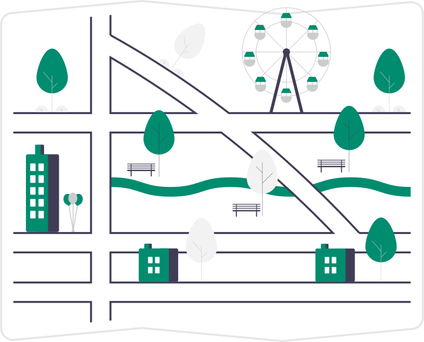

Fonctionnalités
Présentez facilement vos géodonnées à vos citoyens et vos interlocuteurs spécialiste de la gestion du territoire et de ses infrastructures.
Centralisez les informations spatiales utiles à votre administrations.

Imprimez facilement des cartes, dessinez des esquisses et partagez des configurations personnalisées.
Définissez des niveaux d'accès en fonction des besoins, de la sensibilité des données et des droits de chacun-e.
Réalisez des profils altimétriques haute définition. Explorez le Nord Vaudois en 3 dimensions.
Consulter vos données sur le terrain à l'aide d'un smartphone. Exploitez les services mapnv à l'aide du logiciel Open Source QField pour vos relevés de terrain.

 Hébergement et gestion du serveur 100% Suisse. Restez souverain sur vos données.
Hébergement et gestion du serveur 100% Suisse. Restez souverain sur vos données.